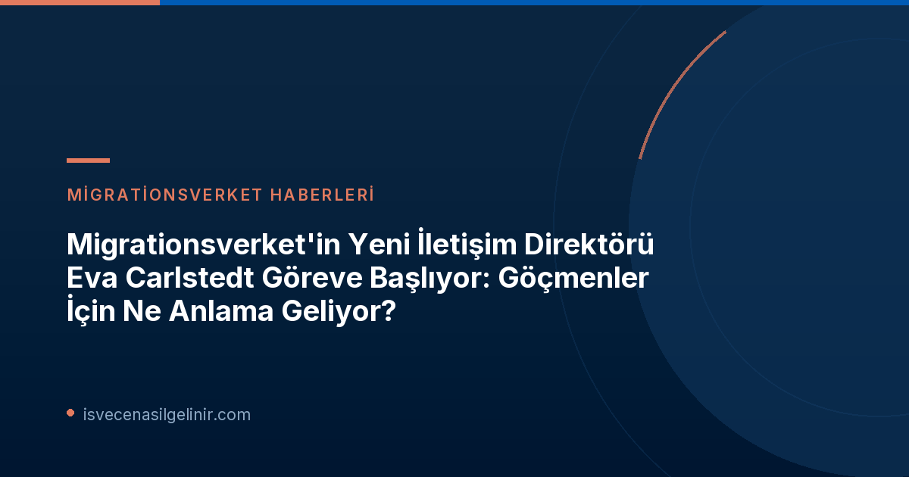

Eva Carlstedt Kimdir? Kariyeri ve Deneyimleri
Eva Carlstedt, İsveç kamu sektöründe iletişim alanında neredeyse 30 yıllık köklü bir kariyere sahip. Bu deneyiminin 18 yılını iletişim yöneticisi olarak farklı kurumlarda geçirmiştir. Kendisi, Migrationsverket gibi önemli bir kurumun iletişim direktörlüğü pozisyonuna gelmeden önce de bu alandaki yetkinliğini defalarca kanıtlamıştır.Migrationsverket'teki Önceki Görevleri
Carlstedt, Migrationsverket bünyesine 2019 yılının sonbaharında katıldı. Kurumun iletişim departmanında birim şefi olarak çeşitli alanlardan sorumlu oldu. Ayrıca, daha önce bazı dönemlerde ve Mayıs 2026'dan itibaren vekaleten İletişim Direktörlüğü görevini üstlenmesi, kurum içindeki bilgisi ve liderlik vasıflarının bir göstergesidir. Bu geçmiş, onun kurumun iç dinamiklerine ve göçmenlik süreçlerinin iletişim ihtiyaçlarına ne kadar hakim olduğunu ortaya koymaktadır.Kamudaki Geniş İletişim Tecrübesi
Migrationsverket'e katılmadan önce de Eva Carlstedt, kamu sektöründe önemli iletişim pozisyonlarında bulunmuştur. Son olarak Transportstyrelsen (İsveç Ulaştırma Ajansı) bünyesinde görev yapan Carlstedt, kamu kurumlarının halkla ilişkiler ve bilgi aktarımı konularındaki hassasiyetine aşinadır. Bu geniş tecrübe, Migrationsverket'in hedef kitleleri, yani İsveç'e gelmek isteyenler ve halihazırda burada yaşayan yabancılar için daha etkin bir iletişim kurmasına yardımcı olacaktır.Eva Carlstedt'in Önemli Notları
- Yeni Görev: Migrationsverket İletişim Direktörü
- Atama Tarihi: 8 Eylül 2026
- Göreve Başlama Tarihi: 10 Eylül 2026
- İletişim Deneyimi: Yaklaşık 30 yıl
- Yöneticilik Deneyimi: 18 yıl İletişim Yöneticisi
- Önceki Kurum: Transportstyrelsen
Yeni Dönemde Migrationsverket İletişimi: Neler Bekleniyor?
Eva Carlstedt'in göreve başlamasıyla birlikte Migrationsverket'in iletişim süreçlerinde bazı olumlu gelişmelerin yaşanması bekleniyor. İsveç'e yerleşme süreçlerinde bilgiye erişimin kritik önemi göz önüne alındığında, bu atama özellikle göçmenler için dikkatle takip edilmesi gereken bir gelişme.Maria Mindhammar'dan Destek Mesajı
Migrationsverket Genel Direktörü Maria Mindhammar, Eva Carlstedt'in ataması hakkında duyduğu memnuniyeti dile getirdi. Mindhammar, Carlstedt'in uzun iletişim ve liderlik deneyimine vurgu yaparak, hem kurumu hem de işleyişi çok iyi tanıdığını belirtti. Bu destek, Carlstedt'in göreve güçlü bir başlangıç yapması için önemli bir motivasyon kaynağı olacaktır.Eva Carlstedt'ten Hedefler ve Vizyon
Eva Carlstedt, yeni görevindeki odak noktasını "kurum içinde ilgili bir iletişimsel destek olmaya devam etmek ve hedef kitlelerimize anlaşılır iletişim garantisi vermek" olarak tanımlıyor. Ayrıca, kurumla birlikte yeni yöntemler ve teknolojilerle gelişmeye devam edeceklerini de ekliyor. Bu vizyon, özellikle karmaşık göçmenlik kanunları ve süreçleri hakkında bilgi arayan bireyler için büyük önem taşımaktadır. Anlaşılır bir iletişim, başvuru süreçlerindeki hataları azaltabilir ve bilgilere daha hızlı ulaşımı sağlayabilir. Bu bağlamda, güncel yasal düzenlemeler ve pratik bilgiler için sverigemedborgarskapsprov.com gibi kaynaklar her zaman başvurulabilecek önemli platformlardır. Yeni iletişim direktörünün bu yaklaşımı, göçmenlerin süreçleri daha iyi anlamalarına yardımcı olacaktır.Referanslar:
İsveç'e Göç Hakkında Daha Fazla Bilgi Edinin
İsveç'e taşınma, oturum izni, vatandaşlık süreçleri ve daha fazlası hakkında güncel ve kapsamlı rehberlerimize göz atın.